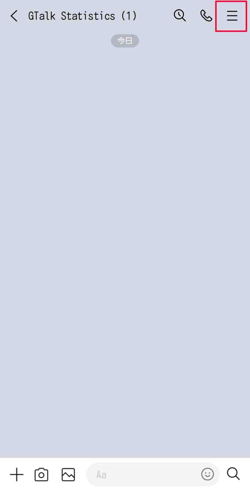
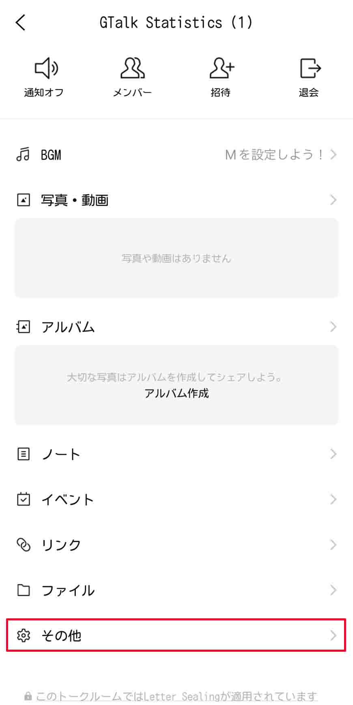
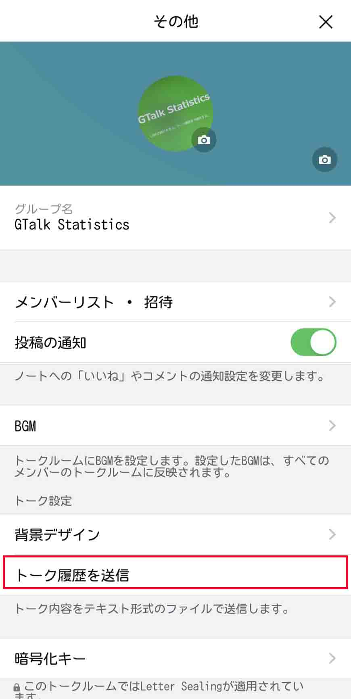

LINEの統計を見る。トーク履歴を可視化する。
LINEのトーク履歴から統計を出すサイトです。
LINEにはトーク履歴をテキストに出力する機能があるので、活用してみました。
トーク履歴からトークの分布など様々な情報が見れます。
トーク履歴を頻繁に消す人にはあまり向いていません。何年分もあると面白いです。
※このサイトはLINE株式会社と一切関係ありません。このサイトを利用して発生した問題等を絶対にLINE株式会社及びその関連会社に報告しないでください。
※また、このサイトを利用して発生した問題には一切関与しません。全て自己責任でお願いします。
全ての処理をサーバーで行わずユーザーのデバイス上で行います。なにかを送信することはありませんのでご安心ください。
ただし、ブラウザやブラウザの拡張機能などによって個人情報を読み取られる可能性があるので、拡張機能を利用している方は気をつけてください。
シークレットモードやプライベートモード、ゲストモードなど拡張機能がない環境で使用するのが望ましいです。
GTalk Statisticsが情報をどこかに送信することはありません。
右上のメニューボタン、その他、トーク履歴を送信でテキスト化できます。あとはファイルを保存してそのままスマホでファイルを解析したりパソコンに転送したりしてください。

準備ができたら、ファイルを読み込んで解析を開始しましょう！